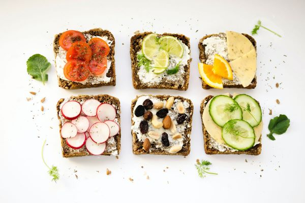

Почему важно правильно питаться?
Исследования продолжают связывать проблемы здоровья с ошибками в питании. Например, сбалансированный рацион может снизить риски развития сердечно-сосудистых заболеваний. Разнообразные и полноценные приемы пищи улучшают все функции организма — от физической работоспособности до когнитивных возможностей мозга. Фактически, пища влияет на все клетки и органы. Если при этом человек занимается спортом, то здоровое питание будет способствовать улучшению показателей и росту достижений.
Основные принципы правильного питания
В последние годы диетологи не считают калорийность рациона основным параметром питательности и пользы. Подсчет калорий полезен, чтобы сориентироваться в выборе блюд и сделать меню более разнообразным, а потеря веса происходит из-за их дефицита. Но снижение калорийности блюд часто приводит к нехватке энергии и основных жизненно-важных макро- и микроэлементов. Базовый обмен веществ и энергетический баланс — не единственные критерии здорового питания. Существует три группы основных макронутриентов: углеводы, белки и жиры. Эти питательные вещества (плюс вода) — основа для жизни. Микроэлементы — это важные витамины и минералы. Каждый из них играет свою особую роль в функционировании организма. Так, магний участвует в более чем шестистах процессах, включая выработку энергии, работу нервной системы и сокращение мышц. Железо переносит кислород, влияет на иммунную систему и функции мозга, а кальций — незаменимый компонент зубов и костей, ключевой минерал для сердца и мышц. Нехватку некоторых витаминов можно восполнить аптечными препаратами, но лучше не доводить до дефицита и получать все необходимое через пищу. Суточная потребность в тех или иных веществах варьируется в зависимости от индивидуальных особенностей организма.

Рекомендуемые продукты
Правильное питание подразумевает употребление цельных продуктов, которые составляют 80-90% рациона. Они богаты питательными веществами и часто отличаются невысокой, но достаточной калорийностью. То есть от каждой порции будет больше пользы без ущерба здоровью и фигуре. Это обязательно крупы, злаки, овощи, фрукты, яйца, мясные, рыбные, молочные продукты, орехи, масла. Для разнообразия эту основу меню можно дополнять ингредиентами опционально: специи, проростки, соевые и бобовые продукты, ягоды, семена.Кроме того, необходимо тщательно следить за достаточным количеством веществ, если вы намеренно исключаете какие-то продукты (при аллергии, веганском питании).
Примерное меню
Здоровый рацион для каждого свой. Это значит, что вам не нужно следовать четкой схеме из списка блюд, а важно научиться самостоятельно сохранять баланс и делать выбор в пользу полезных продуктов. Примерное меню на день может быть таким:
- Завтрак: овсянка с яблоками, орехами, ложкой меда
- Перекус: фрукты, орехи или творог
- Обед: вареный булгур, запеченная семга, овощной салат
- Перекус: кусок цельнозернового хлеба с адыгейским сыром и огурцом
- Ужин: курица из духовки, стручковая фасоль, тушеная с маслом гхи
- Перекус / легкий ужин: стакан кефира, салат из креветок с рукколой и помидорами